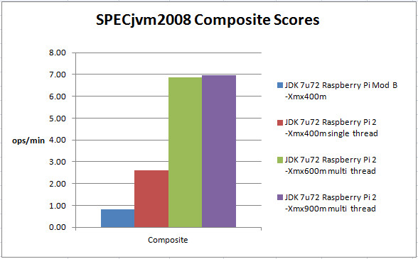

Welcome Raspberry Pi 2!
By Jim Connors 17 February 2015
Having surpassed
4 million units shipped and clearly establishing itself as a
de facto reference platform, the folks at the Raspberry Pi
Foundation are not resting on their laurels. Earlier this
month (February 2015), they introduced the Raspberry
Pi 2 Model B:
Compared to its predecessor, the Raspberry Pi B+, this newer model is packaged with a Broadcom BCM2836 SoC at 900MHz. It is not only superior in performance to the original single core BCM2835 processor on core-by-core basis, it now brings the added benefit of including 4 cores. Add to that a doubling of RAM from 512MB to 1GB and it should be no mystery that this new platform can handle more serious workloads. Later on down, a chart compares the SPECjvm2008 benchmark performance of the original Raspberry Pi Model B with the new Raspberry Pi 2 Model B.
In addition to the substantial performance bump, major kudos are to be given to the Raspberry Pi Foundation engineers for their focus on hardware and software compatibility:
The chart that follows examines Raspberry Pi Java performance via the SPECjvm2008 benchmark. Both original and Raspberry Pi 2 systems ran the latest available Raspbian Image (2015-02-02) and the latest available Java 7 JDK (Java 7 update 72)1. The four vertical bars (blue, red, green, purple) represent four separate runs of the benchmark:

The larger the measurement (ops/min), the faster the result, the single core performance of the Raspberry Pi 2 is a big improvement over its predecessor. As the SPECjvm2008 suite does include a healthy dose of mutithreaded code, enabling the test harness to take advantage of the 4 hardware threads available to the Pi 2 added another huge jump in performance. And finally utilizing the extra RAM (in the form of a larger heap) provided for by the Raspberry Pi 2 yields only a very modest gain in throughput. In particular, 2 of the 11 component tests (compress, xml) show an improvement with the extra heap. For more detailed results, you can view this spreadsheet.
The added horsepower that the Raspberry Pi 2 brings solidifies
the Raspberry Pi family as an important reference platform in the
present as well as the future for companies like Oracle. As
the Internet of Things phenomena plays out and more processing is
brought to the edge, the new Raspberry Pi is better suited to
handle the increased workload that applications like Oracle
Event Processing for Oracle Java Embedded and others
require.
Notes
1 The latest Raspbian distro includes a recent version
of Oracle's Java 8 JDK. Unfortunately the somewhat dated
SPECjvm2008 benchmark has a dependency that requires Java 1.7 or
earlier, so for these benchmarks, we needed to use a Java 7
JDK. The latest available, 7u72, was used for these tests.
2 With 4 cores, the SPECjvm2008 test suite would
produce an OutOfMemoryError when run with the initial
max heap size argument of -Xmx400m. Increasing the
max heap size to 600MB (-Xmx600m) enabled the tests to
complete. Evidently SPECjvm2008 requires more heap space as
more hardware threads are configured in.
3 In order to utilize the full amount of RAM (1GB)
available with the Raspberry Pi 2, a firmware upgrade may be
required. If necessary, you can invoke 'sudo rpi-update'
from a linux shell on the Raspberry Pi 2 to accomplish this task.